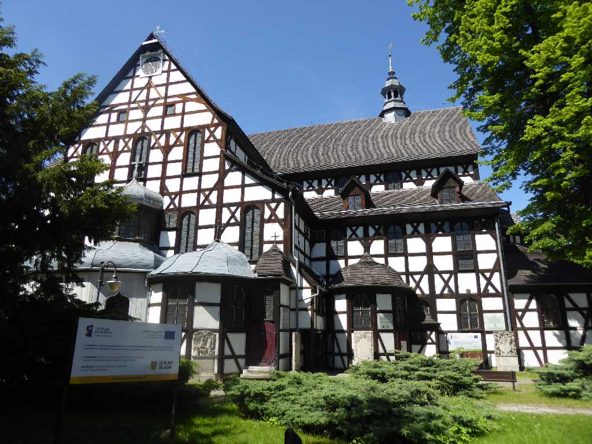
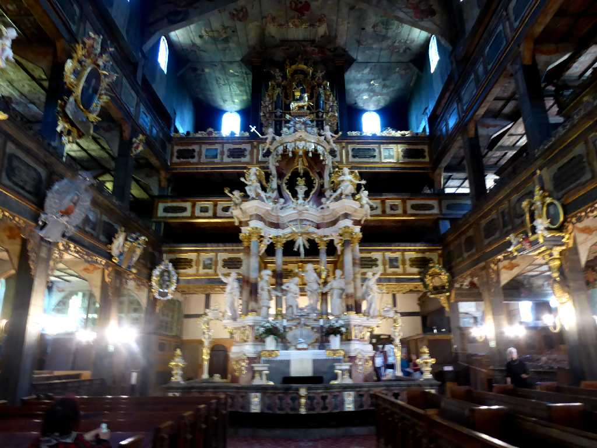
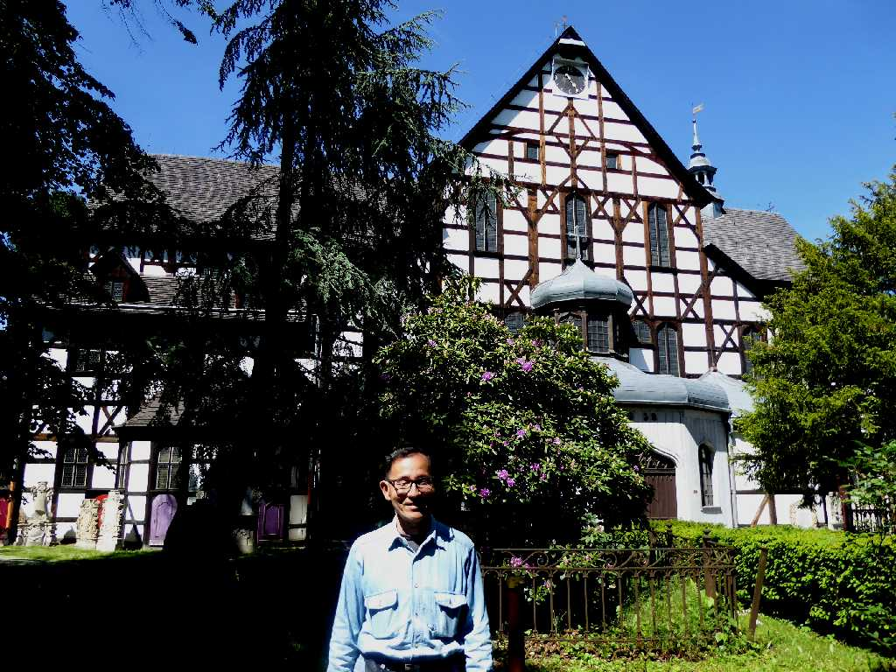

Kościół Pokoju w Świdnicy Świdnica
１６１８年に始まったカトリック派とプロテスタント派とが争った三十年戦争によりプロテスタント派が厳しい制限のなかで造った木造のシュフィドニツァ平和教会

Kościół Pokoju w Świdnicy
シロンスク地方はプロテスタント派が９０％以上であったため木造教会を１６５５年に建て今まで維持されている

May 24 2019 Świdnica